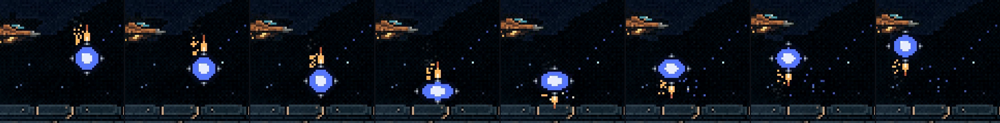
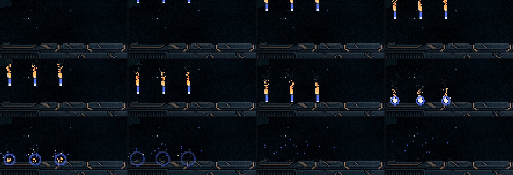

A Serpente sem gravidade: a bola com jatos e a chuva de mísseis
31/10/2026 · terceira rodada das habilidades · nada foi commitado.
Você:
- "o quique e a chuva não condizem com gravidade zero"
- "pense numa bola com propulsores, semelhantes aos usados no menu inicial quando o letreiro desce na tela [...] o desafio vai ser: Calcular ou recriar a física por trás de uma bola quicar naturalmente, sendo guiada ou pilotada por propulsores. É possível?"
É possível, e o jogo já faz isso. A F3 é vácuo: o HUD mostra ZERO-G, e no GDD a gravidade é do lugar (na atmosfera a nave cai, no vácuo ela flutua). O letreiro do menu não segue uma animação desenhada à mão. O código calcula o caminho dele primeiro, e cada bocal dispara quando a aceleração daquele instante pede o empurrão dele (src/menu/abertura.ts). A bola usa a mesma regra, com o mesmo gás: branco quente, chama âmbar, vapor frio.
1. Como uma bola quica sem gravidade
- Quatro bocais: em cima, embaixo, à esquerda e à direita.
- Ela sai da boca do mesmo jeito de antes. Os bocais acendem 0,12 s depois, e até lá ela voa reto, porque no vácuo nada a curva.
- No voo, o bocal de cima queima o tempo todo: o gás sobe e empurra a bola para baixo. A força é a mesma da gravidade da maquete antiga. Força constante desenha uma parábola, pela mesma conta da gravidade, então o arco não é uma imitação.
- No casco, a batida é de verdade: o casco é uma superfície, a bola perde 20% da velocidade, achata e solta faísca da placa.
- Na saída do casco, os jatos pilotam, e cada versão abaixo pilota de um jeito.

2. As três formas de pilotar
O rastro pontilhado só existe na maquete, para dar para ler o arco; ele não vai para o jogo. O desenho da bola, dos bocais e do fogo continua provisório.
3. A chuva de mísseis
- A subida: cada cabeça solta uma salva de nove mísseis, de motor desligado. Eles sobem retos e saem pelo alto.
- A volta (a sua ideia): lá em cima eles viram e acendem o motor, que freia a subida e empurra o míssil de volta para baixo. Por isso cada onda entra de bico para baixo, começando parada: devagar no alto, e esse é o aviso de onde vão cair; rápida perto do casco.
- O fim: eles estouram no casco, com um núcleo branco, um anel na cor da cabeça e faíscas.
- O padrão é o de antes: três ondas, uma por cor, e o vão anda uma casa a cada onda. Mudei uma coisa: a chuva cai só na frente dela, em 10 casas e não 12. Na versão anterior, os mísseis da direita caíam em cima dela.

A virada acontece acima da tela. Dá para trazer esse ponto para dentro da tela e mostrar a virada, mas aí os mísseis ficam um instante parados no alto, dentro da área onde a nave voa.
Para você decidir
- A bola: qual forma de pilotar? Segura a altura, natural, mira, ou uma mistura (por exemplo, segura a altura no começo da luta e passa a mirar quando ela estiver ferida)?
- A cor do fogo: o mesmo gás âmbar do letreiro, como está, ou o fogo na cor de cada cabeça?
- Os mísseis: ficam assim, com a virada fora da tela e a entrada lenta servindo de aviso?
Depois disso, as outras habilidades (os tiros normais e o raio), como você disse.